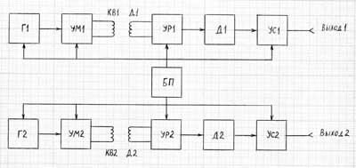
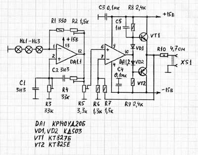
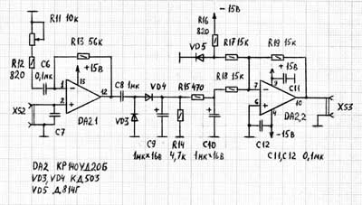
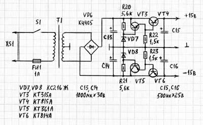
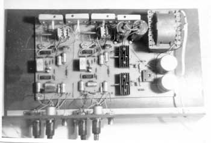
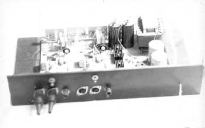
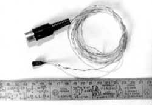
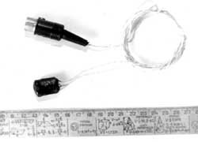
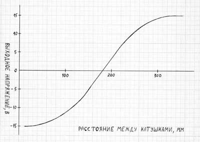

Двухканальный индукционный измеритель расстояний и
линейных перемещений (2-х канальный пневмограф)
Введение
В технике физического эксперимента часто бывает необходимо измерить перемещение одного из объектов относительно другого или изменение размеров объекта. Для этой цели зачастую используются механические устройства типа линеек с визиром, штангенциркулей. Они обладают рядом недостатков:
Для устранения этих недостатков применительно к процедуре контроля дыхания было разработано устройство для измерения расстояний и линейных перемещений, использующее зависимость ЭДС, наведенной в приемной катушке, от расстояния между приемной и передающей (возбуждающей) катушками. В процессе дыхания грудь и живот вносят различный вклад в объем вдыхаемого-выдыхаемого воздуха (торакальный и абдоминальный вклад). Этот вклад зависит от состояния и положения испытуемого. Поэтому измеритель расстояний и линейных перемещений был сделан 2-х канальным. Одна пара приемно-передающих катушек крепится на уровне груди пациента, а другая - на уровне живота. Выходы каналов подключаются к суммирующему устройству. Усиление каналов (относительный вклад груди и живота) регулируется при проведении специальной процедуры калибровки (имитация дыхательных движений при закрытых ротовом и носовых отверстиях). В конечном счете, используя такое устройство, можно вообще исключить вмешательство оператора в процесс измерения, и выводить данные непосредственно на регистрирующие приборы.
Разработка велась совместно с кафедрой анатомии и физиологии человека и животных Тверского государственного университета (руководитель - Миняев В. И.) и лабораторией магнитоэлектроники ТвГУ (руководитель - Гречишкин Р. М.).
1. Назначение прибора
Двухканальный индукционный измеритель расстояний и линейных перемещений предназначен для измерения и контроля перемещений различных объектов или изменений их размеров. Он также позволяет сравнивать между собой изменения двух расстояний или находить их отношение. Прибор может комплектоваться различными индуктивными датчиками в зависимости от конфигурации исследуемого объекта.
2. Технические характеристики
Число измерительных каналов - 2.
Установочное расстояние между приемной и передающей катушками для каждого канала
50 ... 350 мм.
Диапазон измеряемых перемещений 0 ... 100 мм в любую сторону.
Средняя чувствительность прибора (на внешнем выходе) 200 мВ/мм.
Нормальные условия эксплуатации:
- температура окружающего воздуха от 283 до 308 K (от +10 0C до +35
0C)
- относительная влажность воздуха до 80 % при температуре 293 K (+20 0C)
- атмосферное давление 750 + 50 мм рт. ст.
Питание прибора осуществляется от сети переменного тока напряжением 220 +
40 В частотой 50 + 5 Гц.
Потребляемая мощность не более 40 В ∙ А.
Установочные размеры не более 350 х 200 х 100 мм3.
Масса не более 2 кг.
Длина кабелей датчиков до 2 м.
При разработке прибора предполагалось, что он должен измерять перемещения, происходящие квазистатически, т. е. с бесконечно малой скоростью. Но, вообще говоря, значение скорости происходящего перемещения ограничено лишь требуемой точностью измерения.
3. Принцип действия прибора
Работа индукционного измерителя расстояний и линейных перемещений основана на изменении электродвижущей силы (ЭДС) индукции магнитного поля, наводимой в приемной катушке за счет протекающего в катушке возбуждения переменного тока, с изменением расстояния. Блок-схема прибора приведена на рис. 1.

Рис. 1. Блок-схема двухканального индукционного измерителя расстояний и линейных перемещений.
Прибор состоит из двух идентичных приемо-передающих каналов. Рассмотрим работу одного из них (первого). С помощью генератора синусоидальных колебаний Г1 вырабатывается переменное напряжение частотой 5000 Гц. С целью устранения взаимного влияния каналов частоты генераторов Г1 и Г2 должны отличаться примерно в 1.5 - 2 раза. Форма колебаний выбрана синусоидальной, чтобы не создавались взаимные помехи за счет высших гармоник. Усилитель мощности УМ1 служит для создания в катушке возбуждения КВ1 переменного тока, достаточного для надежной работы прибора. Обычно этот ток выбирается максимально возможным для данной катушки возбуждения, лишь бы катушка не перегревалась. За счет взаимной индукции в катушке датчика (приемной катушке) Д1 наводится ЭДС. Напряжение с катушки подается на резонансный усилитель УР1, настроенный на частоту генератора Г1. С выхода усилителя переменное напряжение подается на детектор Д1. Через устройство сдвига нуля УС1 выпрямленное напряжение, зависящее от расстояния между катушками, подается на выходной разъем прибора ("Выход 1"). Далее оно поступает на осциллограф, самописец, вольтметр или другой регистрирующий прибор. Устройство сдвига нуля служит для установки нулевого напряжения на выходе прибора при переведении возбуждающей катушки и катушки датчика в исходное положение. Генераторы, усилители мощности и катушки возбуждения составляют передающую часть прибора, остальные узлы - приемную часть. Блок питания БП вырабатывает все необходимые для работы прибора напряжения.
4. Принципиальная схема
На рис. 2 показана схема передающей части прибора (один канал).

Рис. 2. Принципиальная схема передающей части двухканального индукционного измерителя расстояний и линейных перемещений.
На операционном усилителе DA1.1 собран генератор по схеме мостового генератора Вина, позволяющий получить синусоидальные колебания с малым уровнем искажений. В цепи обратной связи для стабилизации амплитуды колебаний используются лампы накаливания HL1 - HL3. Генератор может перестраиваться по частоте переменными резисторами R3 и R4. Частота генератора устанавливается равной резонансной частоте усилителя приемной части УР1 (см. рис. 1). Через потенциометр R5 переменное напряжение подается на усилитель мощности, собранный на операционном усилителе DA1.2 и транзисторах VT1 и VT2. С помощью потенциометра R5 можно устанавливать величину переменного тока в катушке возбуждения. Резистор R10 служит для ограничения максимального тока в катушке и предохраняет усилитель мощности от короткого замыкания в цепи нагрузки. Катушка возбуждения подключается через разъем XS1, расположенный на передней панели прибора.
Принципиальная схема приемной части прибора приведена на рис. 3 (один канал).

Рис. 3. Принципиальная схема приемной части двухканального индукционного измерителя расстояний и линейных перемещений.
Катушка датчика подключается к разъему XS2, расположенному на передней панели прибора. Вместе с конденсатором C7 она образует резонансный контур, к которому подключен неинвертирующий усилитель на операционном усилителе DA2.1. Его коэффициент усиления можно регулировать переменным резистором R11. С выхода микросхемы DA2.1 усиленное напряжение через конденсатор C8 подается на выпрямитель с удвоением напряжения, собранный на диодах VD3, VD4. Устройство сдвига нуля представляет из себя сумматор, собранный на операционном усилителе DA2.2, на который подается продетектированное напряжение и эталонное напряжение сдвига, снимаемое со стабилитрона VD5. При этом за счет подбора коэффициента усиления резонансного усилителя резистором R11 можно установить на выходе сумматора нулевое напряжение при исходном (нейтральном) положении катушек.
Принципиальная схема блока питания прибора приведена на рис. 4. Он собран по известной схеме параметрического стабилизатора и обеспечивает на выходе напряжения +15 и -15 В при токе нагрузки до 0.7 А.

Рис. 4. Принципиальная схема блока питания двухканального индукционного измерителя расстояний и линейных перемещений.
5. Конструкция прибора
Все узлы прибора смонтированы на печатной плате из одностороннего фольгированного стеклотекстолита. Плата крепится к Г-образному текстолитовому шасси, одна из сторон которого играет роль передней панели. Вид на монтаж прибора сверху показан на рис. 5.

Рис. 5. Двухканальный индукционный измеритель расстояний и линейных перемещений. Вид сверху.
Разъемы для подключения катушек и регистрирующего устройства, а также ручки управления усилением выведены на переднюю панель и сгруппированы по каналам. Внешний вид прибора со стороны передней панели показан на рис. 6.

Рис. 6. Двухканальный индукционный измеритель расстояний и линейных перемещений. Вид спереди.
Конструкция катушек может быть различной, в зависимости от
потребностей эксперимента. При работе с прибором использовались катушки,
конструкция которых описана ниже.
Катушка возбуждения намотана на ферритовом сердечнике М600НН-3-СС2,8 х 12
проводом ПЭВ-2 диаметром 0.1 мм. Число витков - 200. Внешний вид показан на рис.
7.

Рис. 7. Катушка возбуждения двухканального измерителя расстояний и линейных перемещений.
Приемная катушка (катушка датчика) намотана на отрезке ферритового стержня с начальной магнитной проницаемостью 400 проводом ПЭВ-2 диаметром 0.1 мм. Число витков 2200. Внешний вид показан на рис. 8.

Рис. 8. Катушка датчика двухканального измерителя расстояний и линейных перемещений.
Для повышения прочности все катушки пропитаны эпоксидной смолой.
6. Калибровка прибора
Перед использованием прибора на конкретном объекте необходимо произвести его калибровку, которая заключается в следующем. Исходным данным при калибровке является установочное расстояние между катушками. Это расстояние определяется следующим образом. Катушки устанавливаются в исходное положение, от которого измеряется перемещение одной катушки относительно другой. Расстояние между катушками и будет установочным расстоянием. Оно зависит от конфигурации исследуемого объекта. Катушка возбуждения и приемная катушка (катушка датчика) крепятся на каком-либо немагнитном устройстве, позволяющем отсчитывать перемещение. Расстояние между катушками должно быть равно установочному расстоянию на объекте. С помощью кабелей с разъемами катушки подключаются к соответствующим разъемам на передней панели прибора. К выходу калибруемого канала подключается регистрирующее устройство (как правило, цифровой вольтметр). Прибор включается в сеть. Потенциометр на передней панели, регулирующий усиление, устанавливается в положение, при котором напряжение на выходе прибора равно нулю. Затем, производя перемещение катушек на заданное расстояние, снимают зависимость выходного напряжения от перемещения. Эта зависимость и является калибровочной для данного установочного расстояния. Если используются несколько установочных расстояний, то необходимо построить соответствующее количество калибровочных кривых. Типичный вид калибровочной кривой показан на рис. 9.

Рис. 9. Калибровочная кривая двухканального индукционного измерителя расстояний и линейных перемещений для установочного расстояния 180 мм.
Если калибровочная кривая для данного установочного расстояния отсутствует, то можно воспользоваться двумя кривыми, одна из которых соответствует установочному расстоянию меньшему заданного, а другая - большему, и найти перемещение по формуле:
X = X1 + (X2 - X1)(Y - Y1) : (Y2 - Y1),
где X - искомое перемещение, X1 и X2 - перемещения, соответствующие значению выходного напряжения для первой и второй калибровочной кривой, соответственно, Y - заданное установочное расстояние, Y1 и Y2 - установочные расстояния для используемых калибровочных кривых.
Возможны и иные варианты калибровки прибора, зависящие от искусства экспериментатора.
7. Работа прибора в качестве пневмографа
Прибор был разработан и использовался для контроля и измерения параметров дыхания. Процесс дыхания осуществляется при помощи грудных мышц и мышц живота. Поэтому катушка возбуждения и приемная катушка первого канала крепятся на уровне груди (катушка возбуждения - со стороны спины, приемная катушка - спереди), а второго - на уровне живота. Грудь и живот вносят различный вклад в объем вдыхаемого-выдыхаемого воздуха (торакальный и абдоминальный вклад). Чтобы учесть эту разницу, относительное усиление каналов (относительный вклад груди и живота) регулируется при проведении специальной процедуры калибровки (имитация дыхательных движений при отсутствии дыхания - рот и нос закрыты). При этом суммарный сигнал обоих каналов должен быть близок к нулю. Абсолютное усиление (или чувствительность) каналов устанавливается при проведении калибровки с помощью спирометра. Для повышения точности измерений возможно дополнение прибора линеаризатором выходной характеристики.
Ссылки:
10.11.2003
25.01.2006
21.06.2010
Альтернативные источники
энергии
Компьютеры и
Интернет
Магнитные поля
Механотронные системы
Перспективные
разработки
Электроника и технология